mie_abcd¶
- pyvsim.MieUtils.mie_abcd(m, x)[source]¶
Computes a matrix of Mie coefficients:
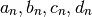
of orders
 to 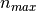, complex refractive index
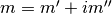,
and size parameter
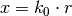,
where
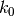 is the wave number in the ambient medium,
to 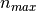, complex refractive index
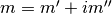,
and size parameter
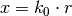,
where
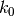 is the wave number in the ambient medium,
 sphere radius;
sphere radius;Reference: p. 100, 477 in Bohren and Huffman (1983) BEWI:TDD122
There is a limitation for the maximum allowable
 for this
function. I have not yet verified from where it comes from
(limit: 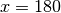, which yields a maximum particle size of
about 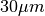 in air)
for this
function. I have not yet verified from where it comes from
(limit: 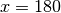, which yields a maximum particle size of
about 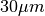 in air)Adapted from Matlab code (Dec 2012) Vectorized (Apr 2013)
Parameters : m : real or complex
The particle refractive index.
x : numpy.array (M)
The Mie parameter, defined as 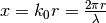 (where
is the particle radius and  is the
light wavelength)
is the
light wavelength)Returns : (an, bn) : numpy.array (, M)
The Mie
 and
and  parameters calculated for
factors, used to
calculate an approximation of the scattered light far field.
parameters calculated for
factors, used to
calculate an approximation of the scattered light far field.Raises : ValueError :
If the particle diameter which is being calculated forces the creation of too big matrices (happens when
is higher than approximately 180)